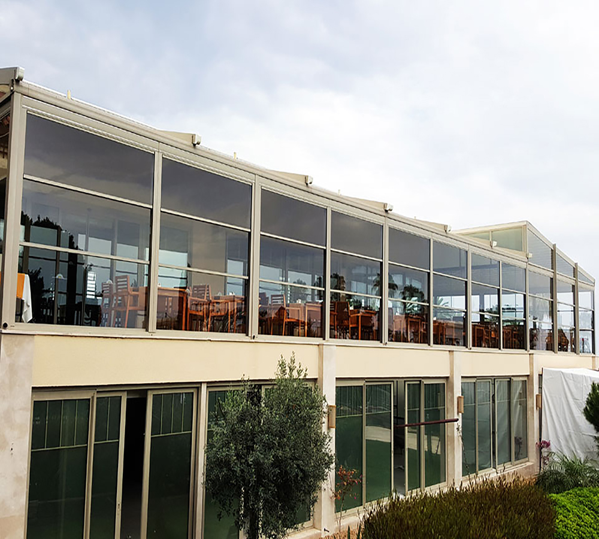
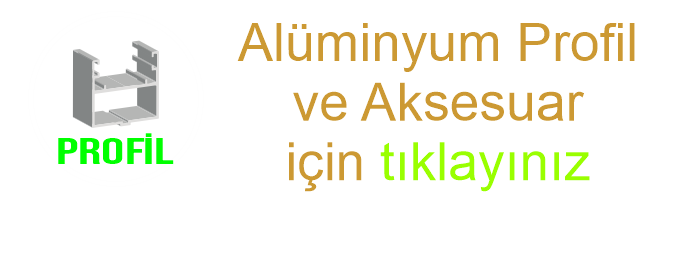

Ana Sayfa
Ürünlerimiz
Giyotin
Pergola
Bioklimatik
Rüzgar Kırıcı
Zip Perde
Wintend
Cam Tavan
Sürme Cam
Katlanır Kapı
Bahçe Çiti
Tek/Isıcamlı
Yalıtım
Renk
İletişim
Ana Menü
Ürünlerimiz
Giyotin
Pergola
Bioklimatik
Rüzgar Kırıcı
Zip Perde
Wintend
Cam Tavan
Sürme Cam Sistemleri
Katlanır Kapı
Bahçe Çiti
Renk
Isı/Ses Yalıtımı
İletişim
Giyotin Cam Sistemleri (Tek Camlı / Isıcamlı)

Giyotin Cam Sistemleri; gelişmiş teknolojisi ve fonksiyonel özellikleri ile
otel, cafe, restaurant, konut, teras, kış/yaz bahçesi, alışveriş merkezleri
gibi yaşam alanlarını daha konforlu ve vazgeçilmez hale getirir. Giyotin cam sistemleri ile doğanın olumsuz yönlerini değil, sadece güzelliklerini yaşayın. Doruk Grup olarak siz değerli müşterilerimize; ilkbahar, sonbahar veya kışın tadını; soğuk, yağmur suyu veya kar olmadan daha ferah, daha geniş, daha aydınlık dolayısıyla daha fazla keyif alabileceğiniz dört mevsim yaşam alanları sunuyoruz.

Sistem Özellikleri
- Dört mevsim yaşam alanı
- Giyotin sistem dikey yönde hareketli cam panellerden oluşur.
- Giyotin sistemler temizlenebilir özelliği sayesinde cafe ve restorant gibi işletmelerin yanı sıra çok katlı konutlara da uygulanabilmektedir.
- Sistemin tamamını veya tek bir modülünü uzaktan kumanda ile kontrol edebilirsiniz. Start-stop teknolojisi sayesinde hareketi istediğiniz noktada durdurabilirsiniz.
- Sisteme eklenebilen yağmur ve rüzgar sensörleri ile sistem, açık durumdayken yağış ve fırtına gibi durumları algılar ve otomatik kapanır.
- Gün ışığı ve led aydınlatma sistemi.
ÜRÜNLERİMİZ
Silinebilir Giyotin Cam Sistemi (Giyotin Plus)
Standart Giyotin Cam Sistemi
TASARIM VE FONKSİYONELLİK
- Temizlenebilir Giyotin Cam Sistemleri, 8mm temperli (kırılmaya dayanıklı) veya ısıcam panellerin motor yardımıyla yukarı/aşağı hareket etmesiyle, panoramik görüş açısı ve gün ışığının içeri girmesiyle doğal aydınlatma sağlar.
- RTS teknolojisi kullanan giyotin sistem motoru uzaktan kumanda ile çalışır ve start-stop teknolojisi sayesinde hareket istenildiği noktada durdurulabilir.
- Sistemin tamamı veya tek bir modülü uzaktan kumanda ile çalıştırılabilir.
- Estetiği ve görüş alanını minimum oranda etkileyen cam profilleri, kullanıcıların görüş alanını engellemez ve sınırsız renk, ahşap kaplama ve desen seçenekleri ile dış ortam ile kusursuz bir bütünlük sağlar.
- Sisteme eklenebilen yağmur ve rüzgâr sensörleri, sistem açık durumdayken yağış ve fırtına gibi durumları algılar ve otomatik kapanır.
- Giyotin sistemler % 60 oranında ses yalıtımı sağlamakta, ısıcamlı sistemlerde kullanılabilen sinerji ve konfor camlar ile ısı yalıtım özelliği daha da üst seviyelere çıkarılabilmektedir.
- Akılı ev sistemleri ile uyumlu çalışmaktadır.
- Giyotin sistemlerimiz; ses, rüzgâr ve yalıtım testleri bağımsız kuruluşlarca yapılmış olup, Avrupa standartlarında sertifikalara sahiptir. Isıcamlı sistem, 8mm standart cama göre enerji tasarrufu, rüzgâr dayanımı ve su sızdırmazlık özelliği daha yüksektir.
- Sistemdeki sabit cam vasistas kanat olarak tercih edebilir.
- Vasistaslı cam opsiyonu, yüksek katlarda cam panellerin dışarından temizleme imkanı sunar. Ayrıca sistem kapalıyken vasistaslı kanat açılabilir ve ortam havalandırılabilir.
GÜVENLİK
- Sistem kapatılırken cam paneller arasında parmak sıkışması önlenmiştir. Sistem açılırken ise motor alt limiti, hareketli camla sabit cam arasında 1-2 cm boşluk olacak şekilde ayarlanarak park pozisyonunda bile sıkışma tehlikesi engellenmiş olur.
- Çelik zincirli giyotin (opsiyonel) sistem diğer uygulama tiplerine göre daha fazla güvenlik sağlar.
- Teras uygulamalarında giyotin sistemi, pencere özelliğinin yanı sıra toplanma sırasında %100 emniyetli cam korkuluk görevi de yapar.
- Özel güvenlikli cam ve profil sistemi ile kilitsiz güvenlik sağlar.
Giyotin sistemler % 60 oranında ses yalıtımı sağlamakta, ısıcamlı sistemlerde kullanılabilen sinerji ve konfor camlar ile ısı yalıtım özelliği daha da üst seviyelere çıkarılabilmektedir.
- Alüminyum ve metal aksam siparişinize uygun statik toz boya ile boyanmaktadır.
- Renk kartelesi RAL kod sistemi ile belirlenmekte ve RAL kod sistemi ile sipariş oluşturulmaktadır.